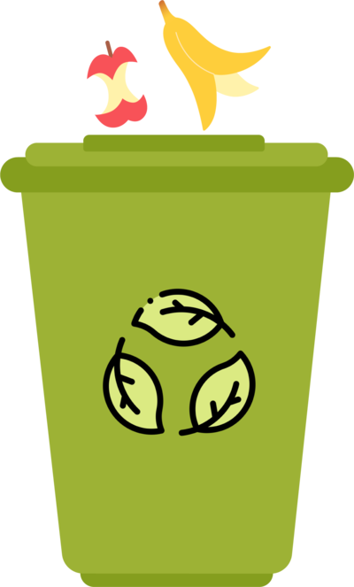

Juntá tus restos de cocina
Podes agregar la mayoría de los restos de cocina: restos de fruta y verduras, comidas preparadas, pescado y carnes cocinadas o no, huevos, pan, restos de café, sacos de té, flores y tejidos que no contengan fibras sintéticas.

Llená el balde Eco-Bokashi
Poné los restos de cocina y comida en el balde Eco-Bokashi. Comprimilos con la herramienta que te proporcionamos en el kit.
Agregá Eco-Bokashi Bran
Espolvoreá la superficie con Eco-Bokashi Bran. Repetí el proceso hasta llenar el balde. Cerrá la tapa y esperamos dos semanas.
Utilizalo en tu jardín!
Agregá el pre-compost en macetas, pila de compost o simplemente enterralos en tu patio. En el plazo de dos semanas tus restos serán asimilados y los nutrientes quedarán disponibles para tus plantas.